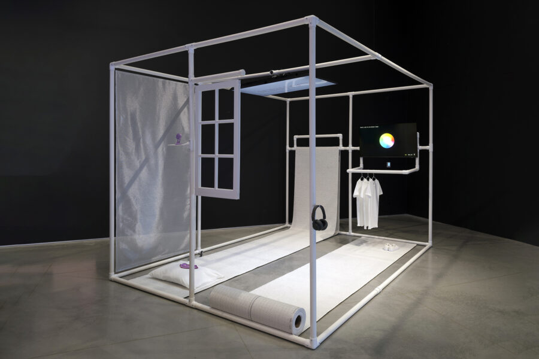

Lauren Lee McCarthy Lecture
Join us for a lecture by artist Lauren Lee McCarthy followed by an audience Q&A.
Lauren Lee McCarthy is an artist examining social relationships in the midst of surveillance, automation, and algorithmic living. She creates performances inviting viewers to engage. To remote-control her dates. To be followed. To welcome her in as their human smart home. To attend a party hosted by artificial intelligence. McCarthy is the creator of p5.js, an open-source creative coding platform that prioritizes inclusion and access with more than 10 million users worldwide. She is also a professor at University of California, Los Angeles Design Media Arts. McCarthy’s work has been recognized by Creative Capital, United States Artists, Los Angeles County Museum of Art, Sundance, Eyebeam, MacDowell, Pioneer Works, and Ars Electronica, among others. Her work has been exhibited internationally, including at the Barbican Centre, London; Ars Electronica, Austria; Fotomuseum Winterthur, Switzerland; Chronus Art Center, Shanghai; and Seoul Museum of Art.
Presented in partnership with the William Bronson and Grayce Slovet Mitchell Lecture Series in SAIC’s Department of Architecture, Interior Architecture, and Designed Objects
This event will be live captioned by Communication Access Realtime Translation (CART) services. The auditorium is wheelchair accessible and hearing assisted devices are available. For additional access requests, visit saic.edu/access.
Image: Lauren Lee McCarthy, LAUREN. Photo by Jane Kratochvil, Sebastian Bach, courtesy of Ford Foundation Gallery.